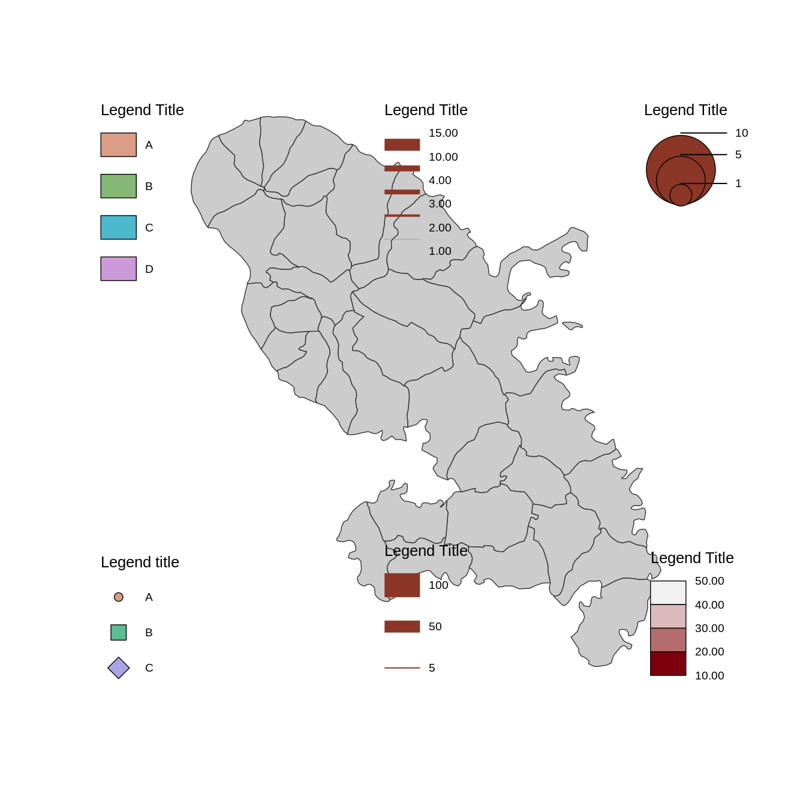

Plot different types of legend. The "type" argument defines the
legend type.
Please note that some arguments are available for all types of legend and
some others are only relevant for specific legend types (see Details).
mf_legend() is a wrapper for maplegend::leg().
Usage
mf_legend(
type,
val,
pos = "left",
pal = "Inferno",
col = "tomato4",
inches = 0.3,
symbol = "circle",
self_adjust = FALSE,
lwd = 0.7,
border = "#333333",
pch = seq_along(val),
cex = rep(1, length(val)),
title = "Legend Title",
title_cex = 0.8 * size,
val_cex = 0.6 * size,
val_rnd = 0,
col_na = "white",
cex_na = 1,
pch_na = 4,
no_data = FALSE,
no_data_txt = "No Data",
box_border = "#333333",
box_cex = c(1, 1),
horiz = FALSE,
frame_border,
frame = FALSE,
bg,
fg,
size = 1,
return_bbox = FALSE,
adj = c(0, 0),
pt_pch,
pt_cex,
pt_cex_na,
pt_pch_na
)Arguments
- type
type of legend:
prop for proportional symbols,
choro for choropleth maps,
cont for continuous maps (e.g. raster),
typo for typology maps,
symb for symbols maps,
prop_line for proportional lines maps,
grad_line for graduated lines maps.
- val
vector of value(s) (for "prop" and "prop_line", at least c(min, max) for "cont"), vector of categories (for "symb" and "typo"), break labels (for "choro" and "grad_line").
- pos
position of the legend. It can be one of 'topleft', 'top', 'topright', 'right', 'bottomright', 'bottom','bottomleft', 'left', 'interactive' or a vector of two coordinates in map units (c(x, y)).
- pal
a color palette name or a vector of colors
- col
color of the symbols (for "prop") or color of the lines (for "prop_line" and "grad_line")
- inches
size of the largest symbol (radius for circles, half width for squares) in inches
- symbol
type of symbols, 'circle' or 'square'
- self_adjust
if TRUE values are self-adjusted to keep min, max and intermediate rounded values
- lwd
width(s) of the symbols borders (for "prop" and "symb"), width of the largest line (for "prop_line"), vector of line width (for "grad_line")
- border
symbol border color(s)
- pch
type(s) of the symbols (0:25)
- cex
size(s) of the symbols
- title
title of the legend
- title_cex
size of the legend title
- val_cex
size of the values in the legend
- val_rnd
number of decimal places of the values in the legend
- col_na
color for missing values
- cex_na
size of the symbols for missing values
- pch_na
type of the symbols for missing values
- no_data
if TRUE a "missing value" box is plotted
- no_data_txt
label for missing values
- box_border
border color of legend boxes
- box_cex
width and height size expansion of boxes, (or offset between circles for "prop" legends with horiz = TRUE)
- horiz
if TRUE plot an horizontal legend
- frame_border
border color of the frame
- frame
if TRUE the legend is plotted within a frame
- bg
background color of the legend
- fg
foreground color of the legend
- size
size of the legend; 2 means two times bigger
- return_bbox
return only bounding box of the legend. No legend is plotted.
- adj
adjust the postion of the legend in x and y directions
- pt_pch
deprecated
- pt_cex
deprecated
- pt_cex_na
deprecated
- pt_pch_na
deprecated
Details
Some arguments are available for all types of legend: val, pos, title,
title_cex, val_cex, frame, bg, fg, size, adj,
return_bbox).
Relevant arguments for each specific legend types:
leg(type = "prop", val, inches, symbol, col, lwd, border, val_rnd, self_adjust, horiz)leg(type = "choro", val, pal, val_rnd, col_na, no_data, no_data_txt, box_border, horiz)leg(type = "cont", val, pal, val_rnd, col_na, no_data, no_data_txt, box_border, horiz)leg(type = "typo", val, pal, col_na, no_data, no_data_txt, box_border)leg(type = "symb", val, pal, pch, cex, lwd, pch_na, cex_na, col_na, no_data, no_data_txt)leg(type = "prop_line", val, col, lwd, val_rnd)leg(type = "grad_line", val, col, lwd, val_rnd)
Examples
mtq <- mf_get_mtq()
mf_map(mtq)
mf_legend(type = "prop", pos = "topright", val = c(1, 5, 10), inches = .3)
mf_legend(
type = "choro", pos = "bottomright", val = c(10, 20, 30, 40, 50),
pal = hcl.colors(4, "Reds 2")
)
mf_legend(
type = "typo", pos = "topleft", val = c("A", "B", "C", "D"),
pal = hcl.colors(4, "Dynamic")
)
mf_legend(
type = "symb", pos = "bottomleft", val = c("A", "B", "C"),
pch = 21:23, cex = c(1, 2, 2),
pal = hcl.colors(3, "Dynamic")
)
mf_legend(
type = "grad_line", pos = "top", val = c(1, 2, 3, 4, 10, 15),
lwd = c(0.2, 2, 4, 5, 10)
)
mf_legend(type = "prop_line", pos = "bottom", lwd = 20, val = c(5, 50, 100))
